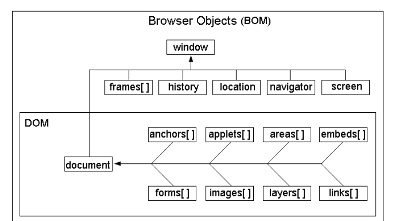

js-BOM&DOM上
作者： 千锋李文浩
时间： 17/01/16
回顾
js三大组成
1、ECMAscript js标准 ECMAscript2015 == ES6
2、BOM
3、DOM
BOM概念（重）
1、BOM是Browser Object Model的缩写，简称浏览器对象模型
2、BOM由一系列相关的对象构成，并且每个对象都提供了很多方法与属性
3、BOM提供了独立于内容而与浏览器窗口进行交互的对象
4、由于BOM主要用于管理窗口与窗口之间的通讯，因此其核心对象是window
BOM结构图

window对象（重）
1、window代表当前窗口
2、window对象是BOM的顶层(核心)对象，所有对象都是通过它延伸出来的，也可以称为window的子对象
3、由于window是顶层对象，因此调用它的子对象时可以不指明window对象，例如下面两行代码是一样的：
alert('我被弹出来了'); 等价 window.alert('我被弹出来了');
4、js中的任何一个全局函数或全局变量都是window的属性
如何在局部定义全局？（把变量或者方法名当做window的属性）
function test(){
window.a = 10;
}
test();
console.log(a);
location对象
1、 location用于获取或设置窗体的URL，并且可以用于解析URL，是BOM中最重要的对象之一
2、location既是window对象的属性又是document对象的属性
3、url组成解析

4、location常用属性和方法
location.href 属性 -- 返回当前文档的完整URL或设置当前文档的URL(常用于实现页面跳转)
location.reload(true) 函数 -- 刷新页面 （不使用缓存）
扩展：什么是网页缓存？
5、location其他属性和方法（了解即可，有需要时百度）
location.hash 属性 -- 返回URL中#符号后面的内容
location.host 属性 -- 返回域名
location.hostname 属性 -- 返回主域名
location.pathname 属性 -- 返回URL中域名后的部分
location.port 属性 -- 返回URL中的端口
location.protocol 属性 -- 返回URL中的协议
location.search 属性 -- 返回URL中的查询字符串
location.assign() 函数 -- 设置当前文档的URL
location.replace() 函数 -- 设置当前文档的URL，并在history对象的地址列表中删除这个URL
location.toString() 函数 -- 返回location对象href属性当前的值
什么是浏览器缓存（扩展）
浏览器缓存（Browser Caching）是为了加速浏览，浏览器在用户磁盘上对请求过的文档进行存储，当访问者再次请求这个页面时，浏览器就可以从本地磁盘显示文档，这样就可以加速页面的阅览
navigator对象
1、navigator对象通常用于检测浏览器与操作系统的版本
2、由于navigator没有统一的标准，因此各个浏览器都有自己不同的navigator版本
3、属性和方法
appCodeName -- 浏览器代码名的字符串表示
appName -- 官方浏览器名的字符串表示
appVersion -- 浏览器版本信息的字符串表示
cookieEnabled -- 如果启用cookie返回true，否则返回false
javaEnabled -- 如果启用java返回true，否则返回false
platform -- 浏览器所在计算机平台的字符串表示
plugins -- 安装在浏览器中的插件数组
taintEnabled -- 如果启用了数据污点返回true，否则返回false
userAgent -- 用户代理头的字符串表示，可以获取浏览器及操作系统信息
navigator中最重要的是userAgent属性，返回包含浏览器版本等信息的字符串 ，常用于判断浏览器版本及使用设备（PC或者移动端）
history 对象
1、 history用于窗体中的导航
浏览者通常可以使用浏览器的前进与后退按钮访问曾经浏览过的页面。
JavaScript的history对象记录了用户曾经浏览过的页面，并可以实现浏览器前进与后退相似的导航功能。
可以通过back函数后退一个页面，forward函数前进一个页面，或者使用go函数任意后退或前进页面，还可以通过length属性查看history对象中存储的页面数
2、常用方法
history.go(n) 函数 -- 前进或后退指定的页面数
history.back() 函数 -- 后退一页
history.forward() 函数 -- 前进一页
document对象（重）
1、document用于表现HTML页面内容
2、document是BOM中最重要对象之一
3、document对象包含一个节点对象，此对象包含页面的所有HTML元素
4、简单方法
//常用于做测试
document.title -- 当前页面title标签中定义的文字
document.body -- 代表页面的body
document.write() //向页面上添加内容（不建议使用）
window对象常用方法（1）
1、弹窗 alert() 无返回值
2、 确认消息框 confirm(str) 有返回值（true或者false）
弹出消息对话框（对话框中包含一个确定按钮与取消按钮）
点击【确认】返回true，点击【取消】返回false
confirm('确定提交注册信息？');
和判断一起使用（否则没什么用）
if( confirm('确定删除宝贝吗？') ){
//点击【确定】做什么事
}
3、 输入框：prompt(str)，
点击【确定】返回用户输入的字符串，【取消】返回null
str 提示信息（提示用户输入什么）
4、窗口方法(一般用不到)
新建窗口 window.open(url, name, 窗口的参数, replace);
调整窗口大小 window.resizeTo(宽度,高度); //直接写数值
关闭窗口 w.close(); //w 为新建的窗口
窗口参数：width、height、top
demo：
var url = 'http:www.baidu.com';
var w = window.open(url,'','width=180px,height=300px,left=200px');
var btn = document.getElementById('button');
btn.onclick = function(){
//关闭窗口
w.close();
}
实战
猜拳游戏
石头 剪刀 布
1 2 3
var me = 1;
var computer = 3;
1 2
2 3
3 1
me - com = -1 || 2
me - com == 0
否则 输了
window对象常用方法2（重）
1、onload 加载完成事件
页面加载完成： window.onload
window.onload = function(){
//页面加载完成做的操作
}
图片加载完成：img.onload
js文件加载完成 script.onload
什么是页面加载完成？
1、页面内容都有哪些？
DOM（各种标签）、css、js、img
2、页面加载完成
DOM（各种标签）、css、js、img 全部加载完成
定时器（重重）
1、定时器
1、设置定时器 setInterval(fn,time);
定时器 setInterval(fn,time) 每隔一段时间做某件事事
fn要做的事情（可以是函数名，也可以是 匿名函数）
time 越小的话执行fn的频率越快 （fn执行的次数越快）
多个定时器会同步执行
demo:
setInterval(function(){
//somecode...
},1000);
2、清除定时器 clearInterval(timer)
clearInterval(定时器的编号) 1， 2 3 4 。。。
清除定时器肯定是在某种条件下,一般放在if语句中
var timer = setInterval(); //timer 定时器的名字
clearInterval(timer);
2、延时器（定时器）
1、设置延时器
setTimeout(fn,time) 过一段执行一件事情
fn 要做的事情
time 延时的时间（等待多久执行fn）
demo：
2、清除延时器
clearTimeout(延时器名字)
var timer = setTimeout(fn,time);
clearTimeout(timer);
实战
1、进度条
2、鼠标移入，图片淡出
3、倒计时
4、广告弹窗自动关闭
补充
1、判断b是否为0
var b = 0;
if( b = 0){ // b = 0 代表赋值，不代表判断
//somecode...
}
2、判断临界条件
opacity -= 0.03;
if(opacity <= 0){
clearInterval(timer);
}
t -= 5;
if(t <= 0){
}
不要使用 == 进行比较 建议使用 <= 或者 >=
window事件3（重）
1、什么元素可以有滚动条
body div
1、滚动条事件 onscroll
window.onscroll = function(){
//页面滚动时做什么事
}
2、获取滚动条的距离
1、距离顶部的距离（常用），存在兼容性
1、document.documentElement.scrollTop
2、document.body.scrollTop //chrome
2、距离左边的距离（不常用）
1、document.documentElement.scrollLeft
2、document.body.scrollLeft //chrome
实战
回到顶部
DOM概念（重）
1、DOM是文档对象模型(Document Object Model)，js的组成部分之一。
2、DOM 是HTML文档结构，其实就是为了能让js操作html元素而制定的一个规范,一套API接口。
3、DOM的根本就是 document 对象，document 对象有很多属性和方法，例如获取页面上的元素、修改元素的样式、创建新的元素等。
4、 API（Application Programming Interface,应用程序编程接口）是一些预先定义的函数，目的是提供应用程序与开发人员基于某软件或硬件得以访问一组例程的能力，而又无需访问源码，或理解内部工作机制的细节
DOM结构图(dom树)（重）

节点类型
1、什么是节点？
DOM树又称节点树
DOM树中的一个对象就称之为一个节点
2、节点有哪几种？
根节点 document.documentElement
元素节点 属性节点 文本节点
demo：
<div class="txt" id="attr-id">
这是文本
</div>
元素节点：整个div元素
属性节点：class/id
文本节点：[这是文本]
节点之间的关系
1、节点关系：父节点、子节点、兄弟节点
demo：
<div class="container">
<span class="txt1">TEXT1</span>
<span class="txt1">TEXT2</span>
</div>
<span></span>
div 是 span 的 父节点
span 是 div 的 子节点
两个span是兄弟节点
DOM查询方法（重）
1、document.getElementById(id名)（常用）
document.getElementById('id名');
元素.getElementById('id名');
1、document指的是在整个文档中查找元素
2、返回的是元素（可以直接进行操作）
2、document.getElementsByClassName(class名)(IE9+) （常用）
通过class获取元素
document.getElementsByClassName('class名');
元素.getElementsByClassName('class名');
1、返回的是一个元素集合（类似于数组） 含有length和下标
2、如果只找到一个元素，返回的仍然是集合
3、如果没找到，返回空集合
4、如果要操作返回的元素，需要使用下标先在集合中找到对应的元素
说明：无论找到多少个元素，返回的都是集合
3、document.getElementsByTagName(标签名)（常用）
获取相同元素（标签）的节点列表
var list = document.getElementsByTagName('标签名');
访问第一个元素 list[0]
访问第二个元素 list[1]
4、document.getElementsByName(name名)（不常用）
获取相同名称（name一样）的节点列表
不是所有标签都有name属性
某些低版本浏览器会有兼容性问题
var list = document.getElementsByName('元素的name属性值');
访问第一个元素 list[0]
访问第二个元素 list[1]
5、document.querySelector(选择器)(IE8+)
根据选择器返回匹配到的第一个元素
6、document.querySelectorAll(选择器);(IE8+)(常用)
根据选择器返回匹配到的所有的元素
实战
1、实时搜索

封装获取元素的函数$(重)

元素的节点属性（重）
1、元素.innerHTML 获取或设置元素节点里的内容
2、元素.id 元素节点的 id 名称
3、元素.className 获取元素的class内容 (不可以使用class)
4、outerHTML/innerText，非 W3C DOM 规范
5、元素.tagName 获取元素节点的标签名
6、title 元素节点的 title属性值（鼠标悬停时的提示）
7、元素.style 获取元素的内联样式
获取非行内样式的属性值的话，必须要使用currentStyle[样式]
（IE特有）或者window.getComputedStyle(元素)[样式];
封装css方法（重）
实战
1、鼠标经过改变字体颜色
2、菜单录入（动态创建表格）
3、淡入淡出轮播
预习
1、什么是自定义属性？
2、firstChild/lastChild/parentNode/previousSibling/nextSibling
3、创建、修改、删除、克隆元素节点
4、文档碎片概念
5、offsetWidth/offsetHeight offsetLeft/offsetTop